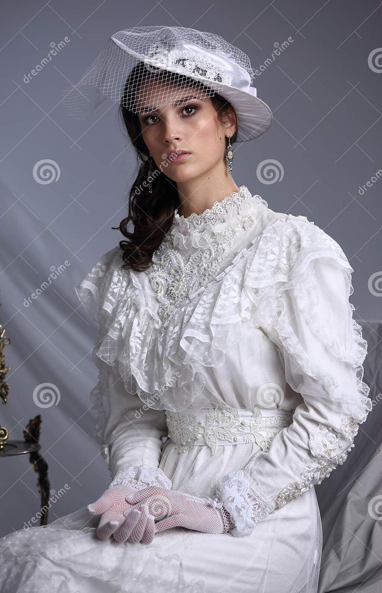

Personagens
João Romão
Português ambicioso, é dono de uma venda, do cortiço e da pedreira. Se aproveita da amante Bertoleza, mas acaba se casando com Zulmira para subir na vida e alcançar uma posição de mais prestígio na sociedade.Bertoleza
Escrava que se pensa ser alforriada. Ela mantém uma relação amorosa com João Romão, trabalha para ele e faz tudo o que ele pede.Jerônimo
Português trabalhador, torna-se gerente da pedreira de João Romão.Miranda
Comerciante que mora no sobrado ao lado do cortiço. É infeliz em seu casamento com Estela, mas não separa por razões financeiras e de exposição.Estela
Esposa infiel de Miranda.

Zulmira
Filha de Estela e de Miranda, casa-se com João Romão e promove a ascensão social do dono do cortiço por meio do casamento.